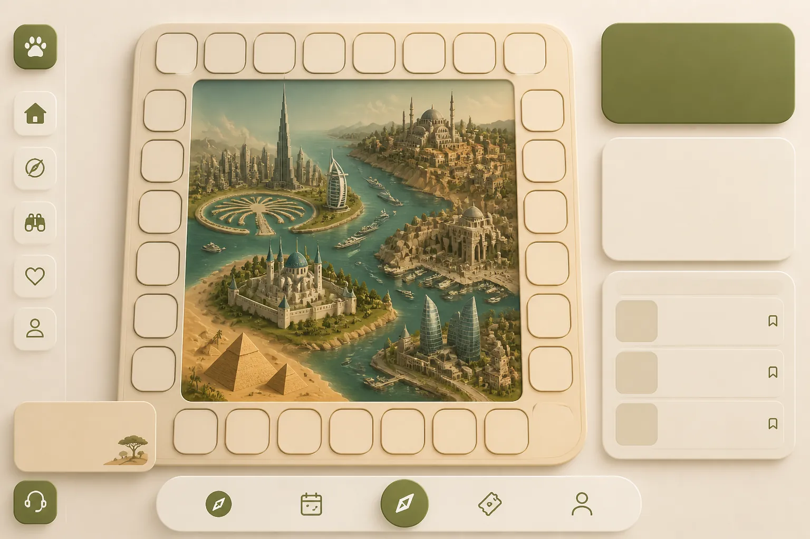
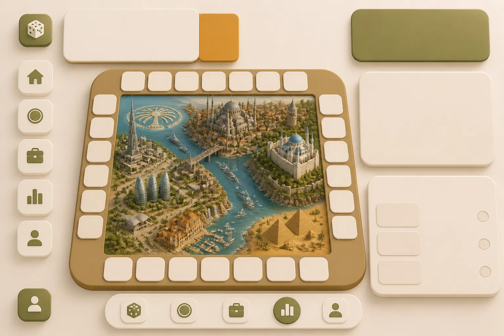
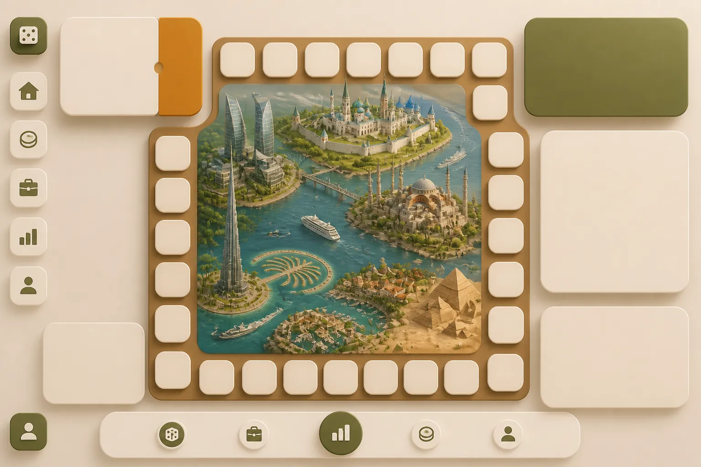
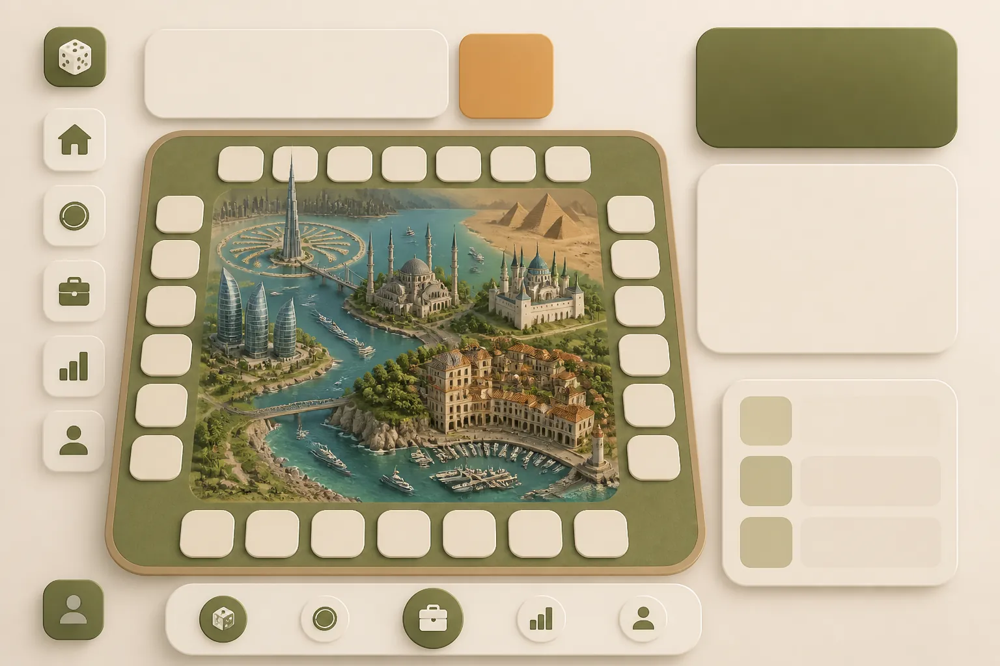
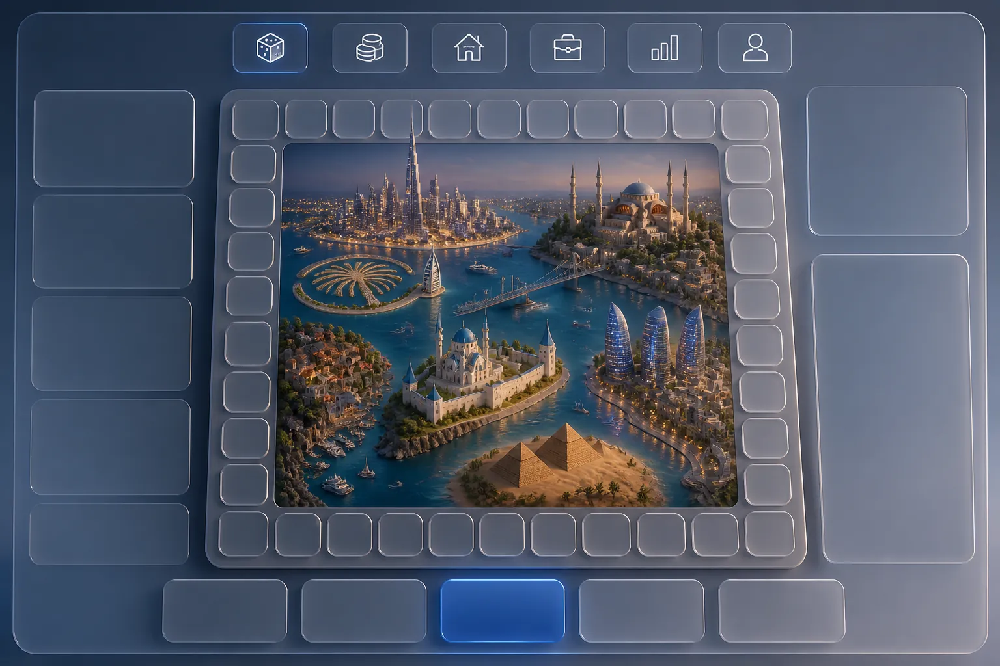
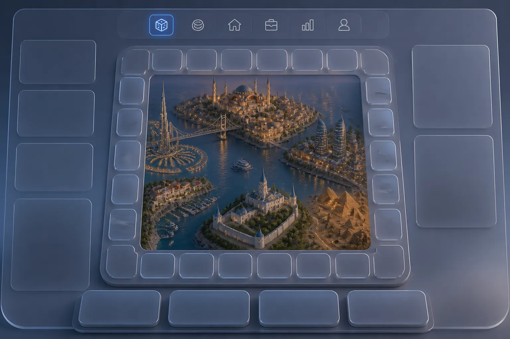
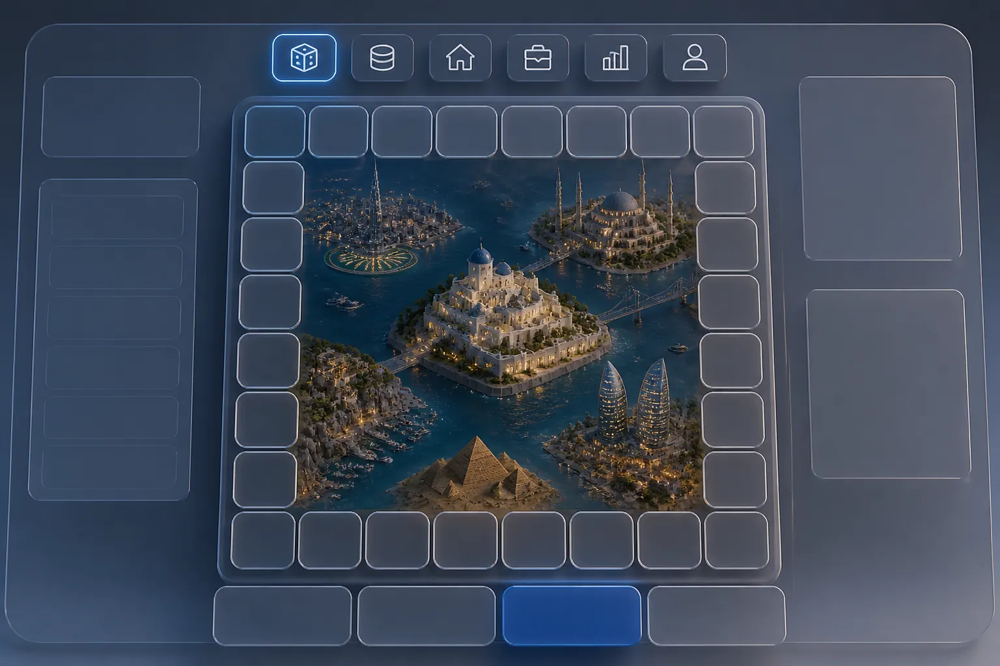
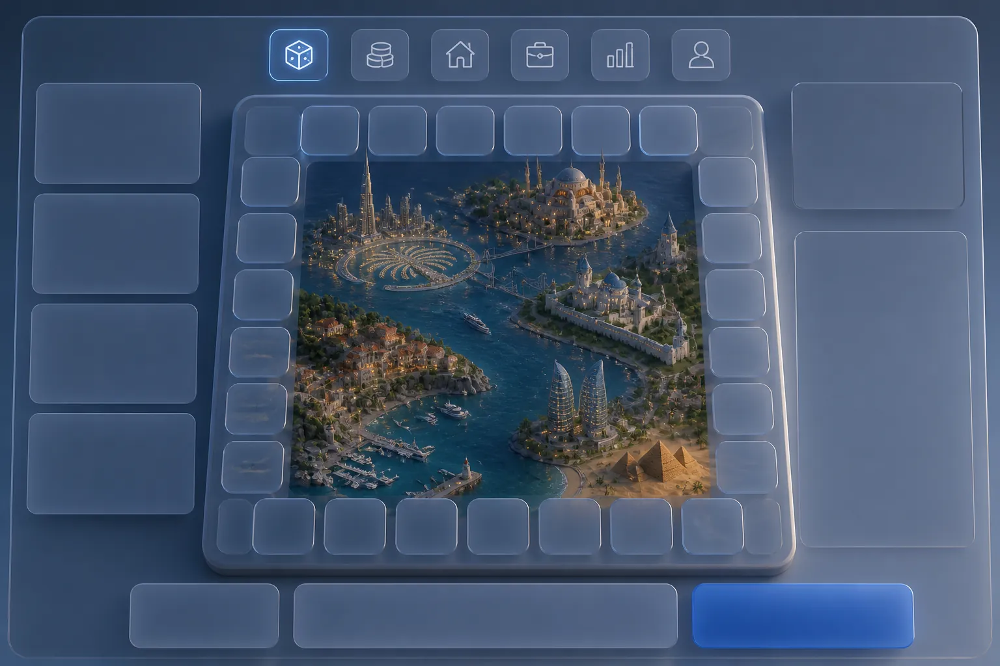

Восемь экранов: четыре по шестому референсу (светлый дашборд с колонкой значков) и четыре по первому (макет на подносе со стеклянными панелями). Города разные — Дубай, Стамбул, Казань, Анталия. Это эталон вида: панели пустые, потому что цифры в них живые — их печатает интерфейс поверх фона, как уже сделано с клетками доски.







